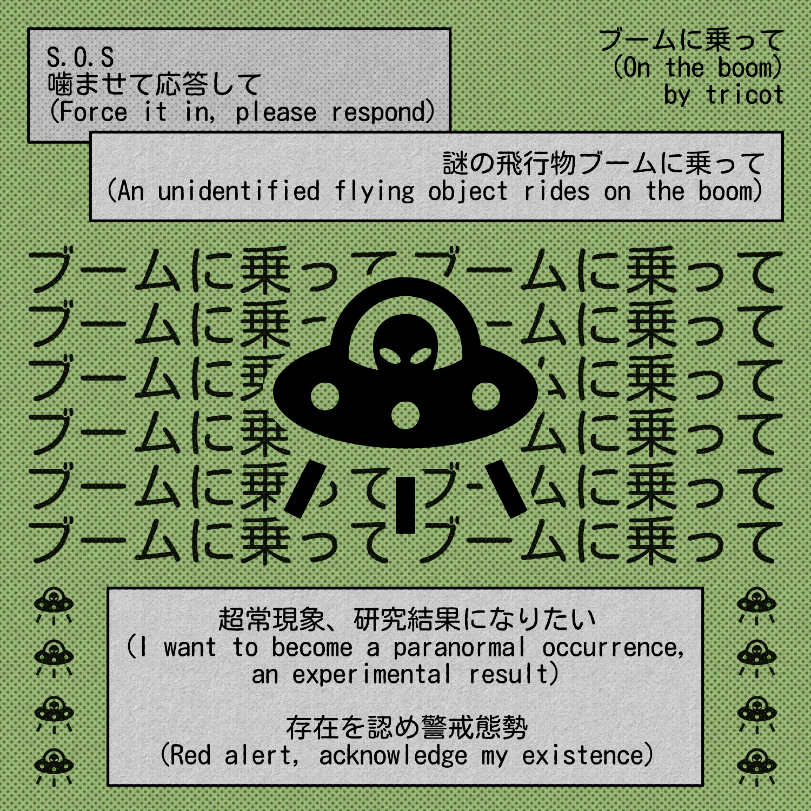

¡Bienvenido a la página web de polifonika!studio!
Espero que disfrutes tu estadía.
Usted está aquí: El Rincón del Arte
Espero que disfrutes tu estadía.
Usted está aquí: El Rincón del Arte


Se recomienda que, si le interesa una imagen que se muestra aquí, la abra en una nueva pestaña para disfrutar de su resolución original.
“Quiero volverme una ocurrencia paranormal, un resultado experimental.”
Pequeño ejercicio gráfico basado en una increíble canción de tricot

El martes y el mundo están cancelados, por Sol
La velocidad de la luz es de 300 mil kilómetros por segundo. Eso es imposiblemente rápido, inimaginablemente violento. El meteorito que se acercaba al pequeño pueblo no viajaba a la velocidad de la luz, pero sus habitantes seguro lo sentían así.
El pan del panadero se quema dado que nadie está ahí para sacarlo del horno. Los juegos del parque se vieron forzosamente removidos de sus pasajeros. Los cuerpos, volando como palomas que esquivan un disparo de rifle de aire comprimido, cubren los techos, los parques, los espacios vacíos y los ahora llenos de cuerpos. Las lágrimas de las madres se mezclan con la de sus hijos y se mezclan con el agua ahora hirviendo del río.
El martes estaba cancelado, el fin del mundo ocupó cada lugar del calendario. Los trenes que ya no pasaban por el pueblo ahora tienen menos razones para hacerlo. A 3 mil kilómetros un campo de dientes de leones se perturba levemente, y algunas de las flores incluso llegar a perder su vestimenta.